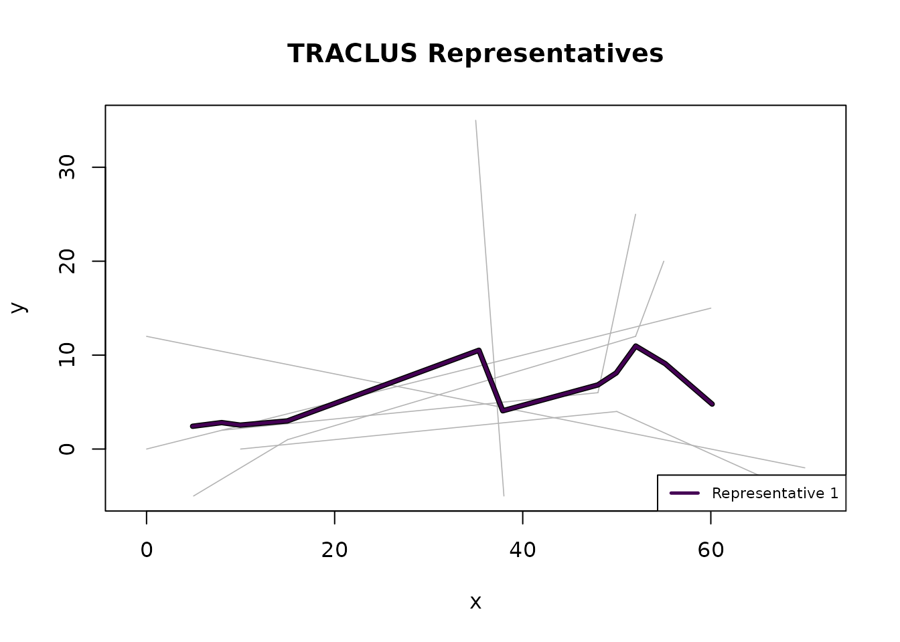

Overview
The TRACLUS algorithm has two critical parameters:
-
eps— the neighbourhood radius for DBSCAN clustering -
min_lns— the minimum number of neighbouring segments to form a cluster
Choosing appropriate values is essential for meaningful results. This vignette explains the parameters and demonstrates the entropy-based estimation heuristic.
Understanding eps
eps defines the maximum weighted distance between two
line segments for them to be considered neighbours. The weighted
distance is:
where the three components capture perpendicular offset, parallel displacement, and angular difference respectively.
-
Euclidean data:
epsis in the same coordinate units as the data. -
Geographic data:
epsis in metres (method = "haversine"or"projected").
Effect of eps
- Too small: Every segment is noise; no clusters are found.
- Too large: All segments merge into a single cluster, losing structure.
- Just right: Meaningful clusters emerge that correspond to common trajectory patterns.
library(TRACLUS)
trj <- tc_trajectories(traclus_toy,
traj_id = "traj_id",
x = "x", y = "y", coord_type = "euclidean"
)
#> Loaded 6 trajectories (40 points).
parts <- tc_partition(trj)
#> Partitioned 6 trajectories into 10 line segments.
# Too small: 0 clusters
c1 <- suppressWarnings(tc_cluster(parts, eps = 1, min_lns = 3))
#> Clustering: 0 cluster(s), 10 noise segment(s).
cat("eps = 1: ", c1$n_clusters, "clusters\n")
#> eps = 1: 0 clusters
# Reasonable: meaningful clusters
c2 <- suppressWarnings(tc_cluster(parts, eps = 25, min_lns = 3))
#> Clustering: 1 cluster(s), 1 noise segment(s).
cat("eps = 25: ", c2$n_clusters, "clusters\n")
#> eps = 25: 1 clusters
# Too large: everything in one cluster
c3 <- suppressWarnings(tc_cluster(parts, eps = 500, min_lns = 3))
#> Clustering: 1 cluster(s), 0 noise segment(s).
cat("eps = 500:", c3$n_clusters, "clusters\n")
#> eps = 500: 1 clustersUnderstanding min_lns
min_lns sets the minimum number of neighbouring segments
a core segment must have for DBSCAN expansion. Additionally, after
clustering, any cluster whose member segments come from fewer than
min_lns distinct trajectories is removed (the
cardinality check from the paper).
- Too small (e.g., 1): Almost every segment forms its own cluster.
- Too large: Only very dense regions form clusters; most segments become noise.
Why min_lns < 3 can produce misleading results
min_lns also controls the sweep-line density threshold
in representative generation (Phase 3). The sweep-line generates a
waypoint only when enough segments cross the current position. However,
when consecutive segments from the same trajectory
share an endpoint (a characteristic point), both segments are
momentarily counted at that position due to the entry-before-exit event
processing. With min_lns = 2, this momentary peak of 2 is
enough to create a waypoint — even though both segments come from a
single trajectory.
Three or more consecutive segments from one trajectory create 2+ waypoints at their shared endpoints, producing a representative that simply traces that trajectory’s path instead of capturing a common sub-trajectory from multiple sources.
Our fix: The sweep-line additionally checks that at
least 2 distinct trajectories are represented among the active segments
before generating a waypoint. This eliminates the degenerate case
without affecting results for min_lns >= 3.
The original TRACLUS paper (Lee, Han & Whang 2007) does not include this check because all experiments use MinLns = 6–9 (Section 4.4), where the edge case cannot occur. Our extension is consistent with the paper’s Phase 2 cardinality check, which also requires trajectory diversity.
Recommendation: Use min_lns >= 3, or
better yet, use the data-driven estimate from
tc_estimate_params() which typically suggests values of 5
or higher.
Automatic parameter estimation
tc_estimate_params() provides a data-driven starting
point using the entropy heuristic from Section 4.4 of the TRACLUS
paper:
- Compute pairwise distances for a sample of segments.
- For each candidate
eps, count how many neighbours each segment has. - Compute the Shannon entropy of the neighbourhood-size distribution.
- Select the
epsthat minimises entropy (sharpest clustering structure). - Set
min_lns = ceiling(mean neighbourhood size at optimal eps) + 1.
set.seed(42)
est <- tc_estimate_params(parts)
#> Estimated parameters: eps = 64.31, min_lns = 3 (grid: 8.234 to 78.69, 50 points).
est
#> TRACLUS Parameter Estimate
#> Optimal eps: 64.31 (coordinate units)
#> Est. min_lns: 3
#> Grid range: 8.234 to 78.69 (50 points)
plot(est)The plot shows the entropy across all tested eps values. Inspect it visually — a pronounced drop or elbow in the curve is often a more reliable guide than the minimum. Use the estimates as a starting point, then refine based on domain knowledge.
Using estimated parameters
result <- suppressWarnings(
tc_traclus(trj, eps = est$eps, min_lns = est$min_lns)
)
#> Partitioned 6 trajectories into 10 line segments.
#> Clustering: 1 cluster(s), 0 noise segment(s).
#> Representatives: 1 trajectory(ies).
result
#> TRACLUS Result (all-in-one)
#> Clusters: 1
#> Noise segs: 0
#> Waypoints: 11 total (11 per representative)
#> eps: 64.31 (coordinate units)
#> min_lns: 3
#> gamma: 1
#> Coord type: euclidean
#> Method: euclidean
#> Status: complete
plot(result)
Distance weights
The three distance components can be weighted differently using
w_perp, w_par, and w_angle:
# Emphasise angular similarity
c_angle <- suppressWarnings(
tc_cluster(parts,
eps = 25, min_lns = 3,
w_perp = 0.5, w_par = 0.5, w_angle = 2
)
)
#> Clustering: 1 cluster(s), 1 noise segment(s).
cat("Angle-heavy: ", c_angle$n_clusters, "clusters\n")
#> Angle-heavy: 1 clusters
# Emphasise perpendicular distance
c_perp <- suppressWarnings(
tc_cluster(parts,
eps = 25, min_lns = 3,
w_perp = 2, w_par = 0.5, w_angle = 0.5
)
)
#> Clustering: 1 cluster(s), 1 noise segment(s).
cat("Perp-heavy: ", c_perp$n_clusters, "clusters\n")
#> Perp-heavy: 1 clustersThe gamma parameter
The gamma parameter in tc_represent() (and
tc_traclus()) controls the minimum spacing between
waypoints in the representative trajectory. The default value of 1 works
well for most cases:
- Smaller gamma: More waypoints, higher fidelity to the underlying segments.
- Larger gamma: Fewer waypoints, smoother representative.
repr1 <- tc_represent(c2, gamma = 1)
#> Representatives: 1 trajectory(ies).
repr5 <- tc_represent(c2, gamma = 5)
#> Representatives: 1 trajectory(ies).
cat("gamma = 1:", nrow(repr1$representatives), "total waypoints\n")
#> gamma = 1: 10 total waypoints
cat("gamma = 5:", nrow(repr5$representatives), "total waypoints\n")
#> gamma = 5: 6 total waypointsGuidelines
| Parameter | Euclidean | Geographic |
|---|---|---|
eps |
Same units as coordinates | Metres (e.g., 100000 = 100 km) |
min_lns |
3–5 for small datasets | 3+ (use tc_estimate_params()) |
gamma |
1 (default) usually fine | 1 (default) usually fine |
| Weights | Equal (default) unless domain-specific | Equal (default) |
method |
N/A |
"projected" (default, fast) or "haversine"
(exact) |
Practical workflow:
- Run
tc_estimate_params()for a data-driven starting point. - Try the suggested values with
tc_traclus(). - Inspect
plot()andsummary()output. - Adjust
epsup (fewer clusters) or down (more clusters) as needed. - Fine-tune
min_lnsif noise/cluster balance is off.